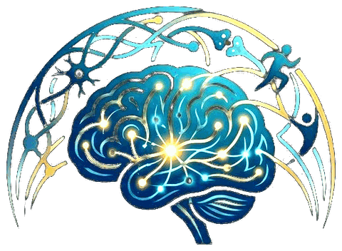

The lab's openly shared materials: analysis and experiment code, datasets, setup videos and scales. Filter by type.
Resources marked “Soon” are in preparation; links are added as they become available.